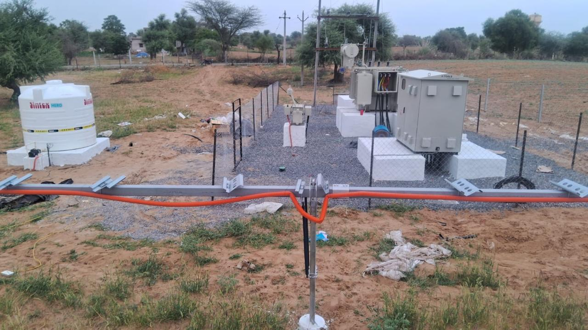
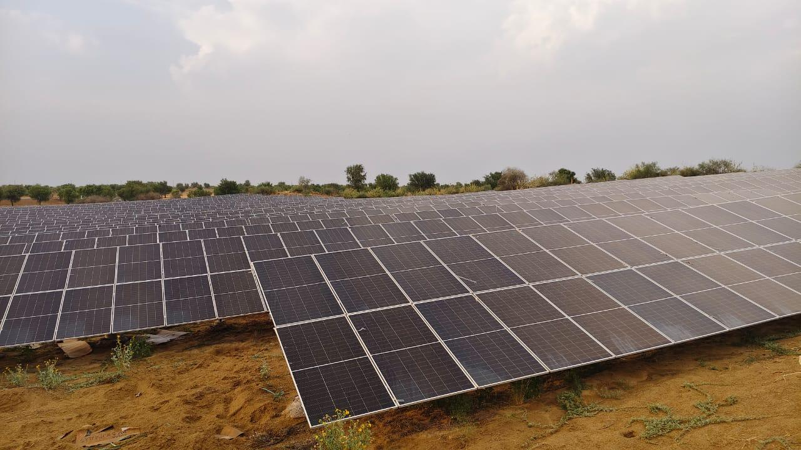

Site
Understand the actual property and installation environment.
Understand how a solar requirement can move from consultation and site assessment to planning, installation, commissioning and support.

CONCEPT RAYS ENERGY • FUTURE ENERGY
A structured project journey helps customers understand the major stages involved in planning and executing a solar project.
Each project should be adapted to its actual scope, site and applicable requirements.
Understand the property, energy requirement and project objective.
Review rooftop, land, access and site conditions.
Develop a solar approach around the requirement and site.
Discuss project design, scope and commercial requirements.
Coordinate solar installation and project execution.
Complete system checks and commissioning activities.
Plan ongoing operational and maintenance support where required.
Solar projects combine site, technical, electrical and execution considerations.
Understand the actual property and installation environment.
Develop a suitable system approach.
Clarify project scope and responsibilities.
Coordinate installation and site work.
Complete checks before system operation.
Support continued operation and maintenance.
Talk to Concept Rays Energy about a solution designed around your property and project requirements.